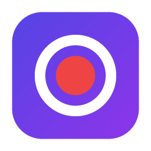
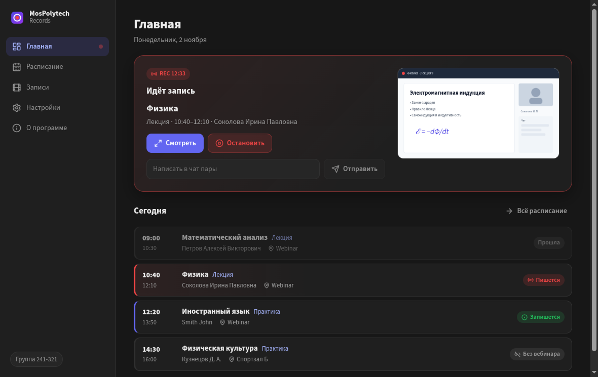
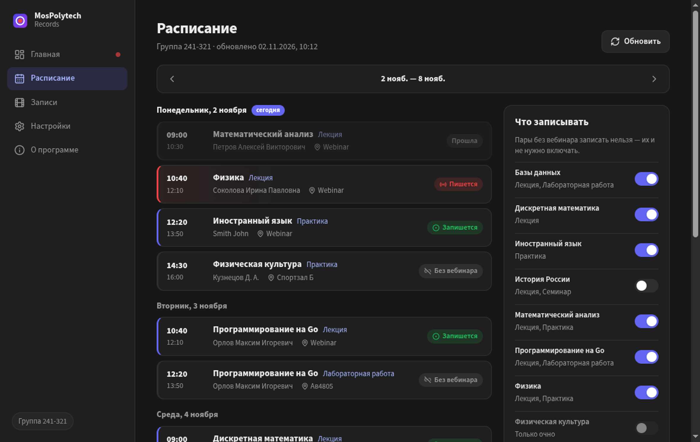
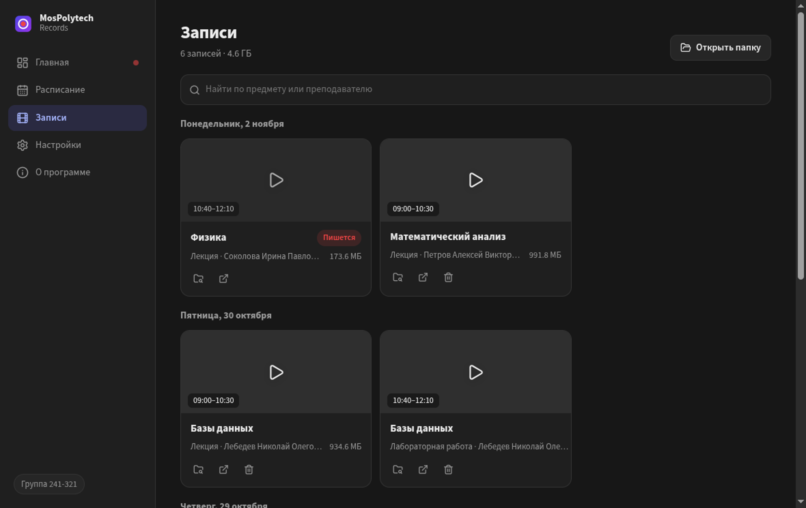
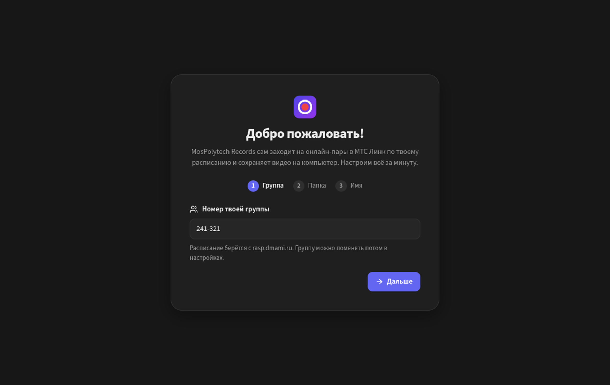
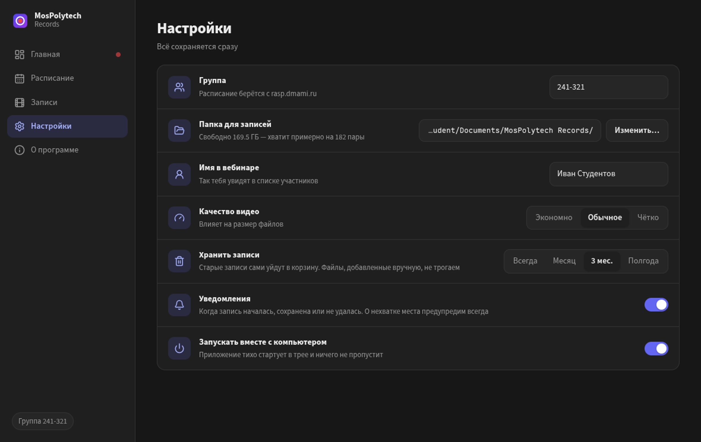

MosPolytech Records сам заходит на онлайн-пары Мосполитеха в МТС Линк по вашему расписанию и сохраняет видео на компьютер — пока вы спите, едете или заняты. Бесплатно, без регистрации.
Ещё есть .msi и .deb, все версии — на странице релизов.

Берёт пары вашей группы с rasp.dmami.ru и показывает неделю. Работает и без интернета.
За 5 минут до пары заходит в вебинар МТС Линк, ждёт преподавателя и пишет видео со звуком.
Окно вебинара скрыто, звук не играет — компьютером можно спокойно пользоваться.
Идущую пару можно открыть на весь экран (звук включается по кнопке) и написать в её чат от своего имени.
Переключатель у каждого предмета; любую идущую пару можно записать вручную.
Все лекции по датам, поиск по предмету и преподавателю, встроенный плеер.
Видео лежат в «Документы/MosPolytech Records» как обычные .mp4. Никаких серверов.
Сообщит, когда запись сохранена, если пару записать не вышло и когда кончается место.
Автозапуск вместе с системой, новые версии скачиваются в фоне и никогда не ставятся во время пары.
241-321, и имя, под которым программа будет заходить в вебинар.



Установите MosPolytech Records и укажите номер группы. Программа сама возьмёт расписание с rasp.dmami.ru, за 5 минут до пары зайдёт в вебинар МТС Линк и запишет видео со звуком. Компьютер должен быть включён.
Да. Программа бесплатная, с открытым исходным кодом под лицензией MIT, без регистрации и подписок.
Только на ваш компьютер, в папку «Документы/MosPolytech Records», как обычные видеофайлы .mp4. Никакие данные не отправляются на сторонние серверы.
Программа не подписана платным сертификатом. Нажмите «Подробнее» → «Выполнить в любом случае».
Нет, это неофициальный студенческий проект, он не связан с Московским Политехом и МТС Линк.
Записывайте занятия ответственно и уважайте правила вуза и преподавателей.